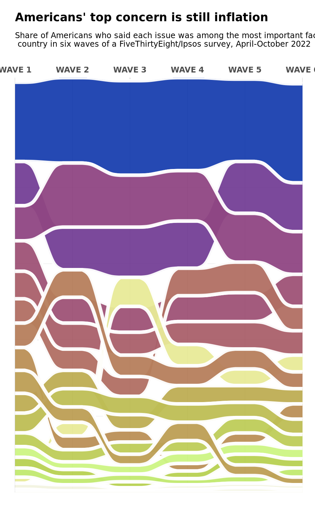
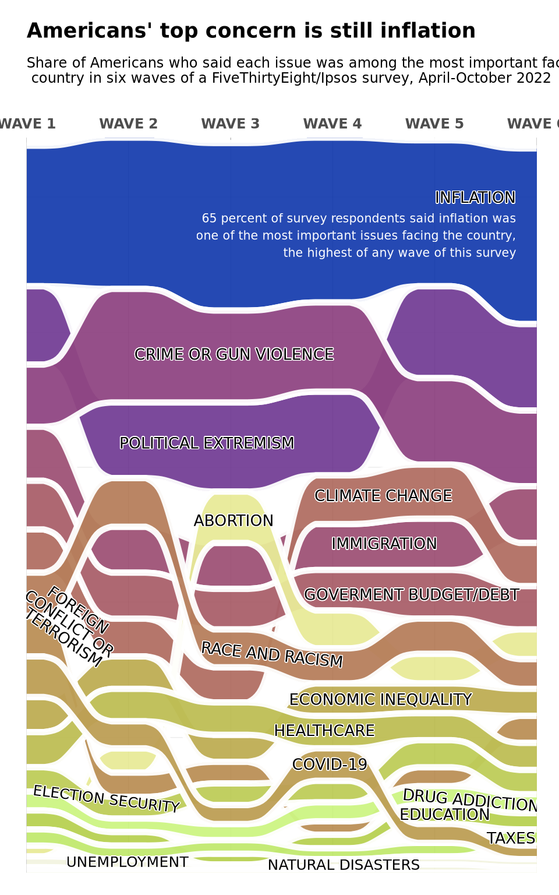
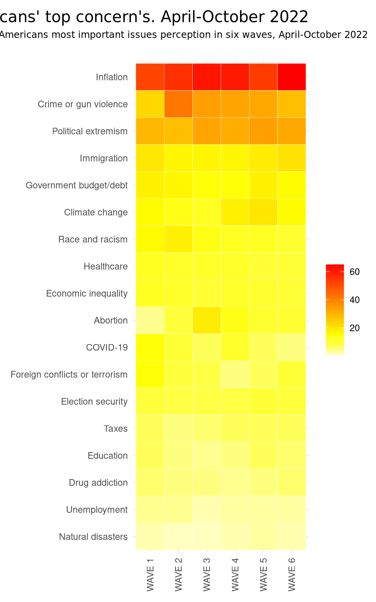

Introduction
Anticipating the 2022 midterm American elections, FiveThirtyEight undertook a survey to unveil the primary concerns of Americans and their potential influence on voting decisions.
The forthcoming graph encapsulates the central issues articulated by 2,000 surveyed Americans from April to October 2022. It aims to shed light on the central aspects of the investigation into the factors influencing American decision-making in the crucial weeks before the elections.
The principal aim of this project is to accurately replicate the initially mentioned graph. Subsequently, upon completion of the replication, the intention is to propose an alternative representation for the same set of data by creating another graph.
Original graph
As mentioned earlier, the original graph depicts the evolution in Americans’ perception of key concerns from April to October 2022. To illustrate this, an alluvial chart is created by FiveThirtyEight, showcasing the progression of this perception across the 6 waves, with inflation emerging as the primary perceived issue in each of them. For this, they rely on the results obtained from the FiveThirtyEight/Ipsos poll, specifically addressing question three of the survey. In this question, a set of categories- represented in the graph- are proposed, and respondents were required to choose three as their primary concerns.

Graphic replication
Load libraries and read the database
The initial step in replicating the graph is to load the necessary libraries for its creation.
library(tidyverse)
library(ggalluvial)
library(shadowtext)
df <- readxl::read_excel("potser.xlsx")Data cleaning and filtering
In order to closely replicate the original graph, it is necessary to conduct filtering and recodification of certain categories and elements.
Initially, we filter out the categories related to “other” and “none of these” to ensure they are not represented.
On the other hand, a recoding process is implemented for the original names of the so-called “waves,” signifying different time periods. These names are abbreviated as follows: W1, W2, W3, W4, W5, and W6. The same procedure is applied to rename certain categories to match those in the original graph.
# Waves
filtered_data$Waves <- recode(filtered_data$Waves,
"W1" = "WAVE 1",
"W2" = "WAVE 2",
"W3" = "WAVE 3",
"W4" = "WAVE 4",
"W5" = "WAVE 5",
"W6" = "WAVE 6")
# Categories
filtered_data$Categoría <- recode(filtered_data$Categoría,
"Inflation or increasing costs" = "Inflation",
"Political extremism or polarization"= "Political extremism",
"Government budget and debt" = "Government budget/debt",
"Election security or fraud" = "Election security",
"Opioid or drug addiction" = "Drug addiction",
"COVID-19/ coronavirus" = "COVID-19")Finally, the diverse categories were arranged to ensure that when creating the graph, they appear in the same order as in the original.
desired_order <- c ("Inflation", "Political extremism", "Crime or gun violence",
"Immigration", "Climate change", "Government budget/debt",
"Abortion", "Race and racism", "Economic inequality",
"Foreign conflicts or terrorism", "Healthcare",
"Election security", "Taxes", "Education", "Drug addiction",
"COVID-19", "Unemployment", "Natural disasters")
filtered_data$Categoría <- factor(filtered_data$Categoría, levels = desired_order)Creation of the plot
For the creation of the alluvial diagram, the ggplot2 package and its various extensions were utilized.
The initial step involved configuring the graph with ggplot, specifying the dataset to be used. The aesthetics (aes) of the graph were defined, with the X-axis representing the different “waves,” the Y-axis representing the associated values (Valores), and color and alluvium (flows in the graph) being determined by the concern category (Categoría).
The application of geom_alluvium was employed to generate the alluvial layers of the graph, with various attributes such as transparency (alpha), color, and line size separating different categories being specified.
Furthermore, scale_x_discrete was used to configure the X-axis, and scale_fill_manual was applied to assign specific colors, derived from the original graph, to each concern category.
Ultimately, the title and subtitle of the graph were added, accompanied by additional adjustments to customize elements such as axis titles, text, margins, and grid lines. The use of coord_cartesian facilitated the adjustment of X-axis limits to ensure proper data visualization.
plot <- ggplot(filtered_data) +
aes(x = Waves, y = Valores, fill = Categoría, alluvium = Categoría) +
geom_alluvium(decreasing = FALSE, show.legend = FALSE, alpha = 0.95, colour = "white", size = 1.9) +
scale_x_discrete(position = "top") +
scale_fill_manual(values = c("#1a40af", "#743f96", "#8f4683", "#9e5276",
"#b16f63", "#a9606b", "#e7ea98", "#b67f5c",
"#bdad53", "#ba8f57", "#bdbd54", "#bdcc59",
"#ccf483", "#b7d051", "#c1e86f", "#bc9e54",
"#f2f3e0", "#f2f3e0")) +
labs(
title = "Americans' top concern is still inflation",
subtitle = "Share of Americans who said each issue was among the most important facing the\n country in six waves of a FiveThirtyEight/Ipsos survey, April-October 2022"
) +
theme_minimal() +
theme(
axis.title.x.top = element_blank(),
axis.title.y = element_blank(),
axis.text.x = element_blank(),
axis.ticks.x = element_blank(),
axis.text.x.top = element_text(angle = 0, hjust = 0.5, vjust = 0.5, size = 9, family = "Agency FB", face= "bold"),
axis.text.y = element_blank(),
axis.ticks.y = element_blank(),
plot.margin = unit(c(1, 1, 1, 1), "lines"),
panel.grid.major.x = element_line(color = "black", size = 0.07),
panel.grid.minor.x = element_line(color = "black", size = 0.07),
plot.title = element_text(family = "Hansplatz Grotesk Bold", size = 13,
face = "bold", hjust = 0, margin = margin(b = 10, unit = "pt")),
plot.subtitle = element_text(family = "Hansplatz Grotesk Bold", size = 9,
face = "plain", hjust = 0,
margin = margin(t = 0, r = 0, b = 20, l = 0, unit = "pt"))
) +
coord_cartesian(xlim = c(NA, NA), expand = FALSE)
plot
Annotations
Finally, ggannotate was employed for the annotations of each category in the graph, utilizing “shadowText” for the shading of each annotation. Adjustments were made to the font type, size, color, as well as inclination.
plot <- plot + annotate ("shadowText", x= 5.4, y=250, label= paste("INFLATION"),
family= "Franklin Gothic Medium", size= 3.5,
color= "black", bg.color= "white", bg.r= 0.08)
plot <- plot + annotate (geom= "text", x= 5.8, y= 236,
label = paste ("65 percent of survey respondents said inflation was",
"one of the most important issues facing the country,",
"the highest of any wave of this survey", sep = "\n"),
family = "Franklin Gothic Medium", size= 2.7,colour= "white", hjust=1)
plot <- plot+ annotate ("shadowText", x= 3.03547189834111, y= 191.940039688379,
label= paste ("CRIME OR GUN VIOLENCE"),
family= "Franklin Gothic Medium", size= 3.5,
color= "black", bg.color= "white", bg.r= 0.08 )
plot <- plot+annotate ( "shadowText", x= 2.7681052384344, y = 159.126290409273,
label =paste ("POLITICAL EXTREMISM"),
family= "Franklin Gothic Medium", size= 3.5,
color= "black", bg.color= "white", bg.r= 0.08 )
plot <- plot+annotate ( "shadowText", x=4.49832172596228, y = 139.615412459535,
label = paste ("CLIMATE CHANGE"),
family= "Franklin Gothic Medium", size= 3.5,
color= "black", bg.color= "white", bg.r= 0.08 )
plot <- plot+ annotate ( "shadowText",x = 4.50788283594673, y = 121.878250687045,
label = paste ("IMMIGRATION"),
family= "Franklin Gothic Medium", size= 3.5,
color= "black", bg.color= "white", bg.r= 0.08 )
plot <- plot+ annotate ("shadowText", x= 4.77559391551139, y = 103.02794700318,
label = paste ("GOVERMENT BUDGET/DEBT"),
family= "Franklin Gothic Medium", size= 3.5,
color= "black", bg.color= "white", bg.r= 0.08)
plot <- plot+ annotate ("shadowText", x= 3.03040079654389, y = 130.400910778853,
label = paste("ABORTION"), family= "Franklin Gothic Medium",
size= 3.5, color= "black", bg.color= "white", bg.r= 0.08)
plot <- plot+ annotate ("shadowText", x= 3.40547189834111, y = 80.7433528761925,
label= paste("RACE AND RACISM"),
family= "Franklin Gothic Medium", size= 3.5, angle=-6L,
color= "black", bg.color= "white", bg.r= 0.08)
plot <- plot+ annotate ("shadowText", x= 1.50466965260073, y = 97.2508436873157,
label= paste("FOREIGN"), family= "Franklin Gothic Medium",
size= 3.5,angle= -35L, color= "black", bg.color= "white", bg.r= 0.08)
plot <- plot+ annotate ("shadowText", x= 1.42134402562677, y = 90.9367782109428,
label = paste ("CONFLICT OR "),
family="Franklin Gothic Medium", size= 3.5, angle= -35L,
vjust = 0.25, color= "black", bg.color= "white", bg.r= 0.08)
plot <- plot+ annotate ("shadowText", x= 1.35965944508192, y = 87.1183131338777,
label = paste ("TERRORISM"), family= "Franklin Gothic Medium",
size= 3.5,angle= -35L, color= "black", bg.color= "white", bg.r= 0.08)
plot<- plot+ annotate ("shadowText", x= 3.97289956683296, y = 40.1741646222174,
label = paste ("COVID-19"), family= "Franklin Gothic Medium",
size= 3.5, color= "black", bg.color= "white", bg.r= 0.08)
plot<- plot+ annotate ("shadowText",x = 3.9202178680187, y = 52.7033197743356,
label = paste("HEALTHCARE"), family= "Franklin Gothic Medium",
size= 3.5, color= "black", bg.color= "white", bg.r= 0.08)
plot<- plot+ annotate ("shadowText", x= 4.46963839600892, y = 64.1996250727836,
label = paste ("ECONOMIC INEQUALITY"),
family= "Franklin Gothic Medium", size= 3.5, color= "black",
bg.color= "white", bg.r= 0.08)
plot<- plot+ annotate ("shadowText", x= 1.7800952657120652, y = 27.3196877943721,
label = paste ("ELECTION SECURITY"),
family= "Franklin Gothic Medium", size= 3.3, angle= -7L,
color= "black", bg.color= "white", bg.r= 0.08)
plot <- plot+ annotate ("shadowText", x =5.35770595205863, y = 26.8394405136272,
label = paste ("DRUG ADDICTION"),family= "Franklin Gothic Medium",
size= 3.5, angle= -5L, color= "black", bg.color= "white", bg.r= 0.08)
plot <- plot+ annotate ("shadowText", x = 5.10049440802788, y = 21.6345688058513,
label = paste ("EDUCATION"),family= "Franklin Gothic Medium",
size= 3.5, color= "black", bg.color= "white", bg.r= 0.08)
plot <- plot+ annotate ("shadowText", x = 5.75082486420105, y = 12.8789224437039,
label = paste ("TAXES"), family= "Franklin Gothic Medium",
size= 3.5, color= "black", bg.color= "white", bg.r= 0.08)
plot <- plot+ annotate ("shadowText", x = 1.98660111783731, y = 4.08708463768002,
label = paste ("UNEMPLOYMENT"),
family = "Franklin Gothic Medium", size = 3.3,
color= "black",bg.color= "white", bg.r= 0.08)
plot <- plot+ annotate ("shadowText",x= 4.10927846574883, y = 2.98728980567533,
label = paste ("NATURAL DISASTERS"),
family= "Franklin Gothic Medium", size= 3.3,
color= "black", bg.color= "white", bg.r= 0.08)
plot
Graphic alternative
As an alternative visualization to maintain the objective of depicting the evolution of Americans’ perceptions regarding their top concerns across the six waves, I find the heatmap to be a highly effective choice. This approach facilitates the observation of trend developments and patterns, allowing for comparisons between different categories. Additionally, the representation of values through varied color gradients enhances the intuitive depiction of intensity for each category.
To accomplish this, the same pre-cleaned database (filtered_data) used in replicating the graph was employed. The only modification made was changing the order of the categories.
In this manner, the ggplot2 library is employed to create a heatmap that visualizes the evolution of Americans’ primary concerns over six periods (waves) between April and October 2022.
The subsequent step revolves around constructing the graph itself. Utilizing ggplot, the heatmap is crafted, where waves are positioned on the X-axis, categories (Categoría) on the Y-axis, and values are represented through colors. Similarly, the heat.colors palette is employed, featuring 10 distinct shades, aiming to accentuate diverse changes and enhance visual perception. To associate warmer colors with higher values, the “rev” function is used, thereby reversing the order. Furthermore, the graph’s title is specified, and theme adjustments are applied to enhance readability and overall presentation.
This approach delivers a clear and effective visual representation of the evolution of Americans’ top concerns over time.
heatmap <-ggplot(filtered_data, aes(x = Waves, y = Categoría, fill = Valores)) +
geom_tile(color = "white") +
scale_fill_gradientn(colours = rev(heat.colors(10))) +
labs(
title = "Americans' top concern's. April-October 2022",
subtitle = "Share of Americans most important issues perception in six waves, April-October 2022",
fill = NULL
) +
theme_minimal() +
theme(
axis.text.x = element_text(angle = 90, vjust = 0.5),
axis.title.x = element_blank(),
axis.title.y = element_blank(),
legend.title = element_blank(),
plot.title = element_text(family= "Franklin Gothic Medium",hjust = 1, size = 15,
margin = margin(b = 5, l = 10, unit = "pt")),
plot.subtitle = element_text(family = "Hansplatz Grotesk Bold", size = 9,
face = "plain", hjust = 0.75,
margin = margin(t = 0, r = 0, b = 20, l = 10, unit = "pt")),
plot.margin = margin(t = 10, r = 10, b = 10, l = 10, unit = "pt")
)
heatmap